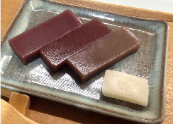

{{trad.intro}}
{{trad.shop}}節慶祭典
為您介紹東京都內舉辦的幾個大型祭典，
還在安排時間的您不妨參考。
還在安排時間的您不妨參考。
{{ item.name}}
{{ item.date }}
{{item.intro}}
橫丁商圈
讓我們一同前往小巷盡頭的另一個世界——萬眾矚目的橫丁吧！
{{ yoko.intro }}
{{ yoko.name }}
橫丁商圈
讓我們一同前往小巷盡頭的另一個世界
萬眾矚目的橫丁吧！
{{ yoko.name }}
{{ yoko.intro }}
古蹟巡禮
難得來到東京一趟，您絕對不能錯過這些名勝古蹟！

靖國神社
建於1869年，此神社祭祀著從幕府末期到大東亞戰爭期間陣亡的246萬6千多位亡靈。 在神社境內的遊就館裡，展示有英靈遺物及相關歷史資料等。
神社境內種有約500株櫻花樹，吸引了眾多參拜者。
神社境內種有約500株櫻花樹，吸引了眾多參拜者。
古蹟巡禮
難得來到東京一趟，您絕對不能錯過這些名勝古蹟！
靖國神社
建於1869年，此神社祭祀著從幕府末期到大東亞戰爭期間陣亡的246萬6千多位亡靈。 在神社境內的遊就館裡，展示有英靈遺物及相關歷史資料等。
神社境內種有約500株櫻花樹，吸引了眾多參拜者。
神社境內種有約500株櫻花樹，吸引了眾多參拜者。
日本必吃-拉麵比拚
東京拉麵一般按照味道或店名來分類。將為您介紹東京都內三大特色拉麵聚集地!!
洋和菓子-甜點對決
老字號的傳統和菓子以及世界級的洋菓子，東京獨家美味甜點任君挑選。
和菓子
人形燒
內包紅豆餡烤成的雞蛋糕，造型從文樂人形到七福神等傳統形狀到卡通人物，五花八門，不勝枚舉。

餡蜜
蜜豆疊上紅豆餡一起食用，發源於東京的和菓子。冰涼享用，一股清涼感覺，超級熱銷的消暑聖品。

大福
將紅豆等內餡包在麻糬裡。口味種類相當多樣豐富，有的麵糰加入艾草，有的在內餡裡面放草莓。

羊羹
羊羹為一種將紅豆餡用寒天凝固的點心，柔軟可口的水羊羹在夏天冰冰的吃，是熱門的消暑聖品。
洋菓子
甜甜圈
在東京能一次品嚐世界熱門甜甜圈店。還有最近相當受歡迎的夏威夷式炸甜甜圈的專賣店。
水果聖代
使用日本各地最新鮮、頂級水果製成的水果聖代。來細細品嚐新鮮當季水果吧！

鬆餅
颳起一陣 旋風的鬆餅。推薦在夏威夷熱門鬆餅店品嘗比較各式各樣的鬆餅。有景點還推出熊貓鬆餅哦！

蛋糕
東京的蛋糕店為數眾多。發明草莓鮮奶油蛋糕的Colombin亦位於東京都內。
日本情懷-鄉土料理
在此為您介紹江戶前壽司、蕎麥麵、東京的下町美食，以及能夠感受到江戶歷史的特產。
親身體驗，發現東京魅力
東京有許多能夠參觀、製作並玩樂的體驗型景點，您可接觸到充滿江戶韻味的傳統工藝世界。
{{event.name}}
{{event.eng}}
{{event.intro_1}}
{{event.intro_2}}